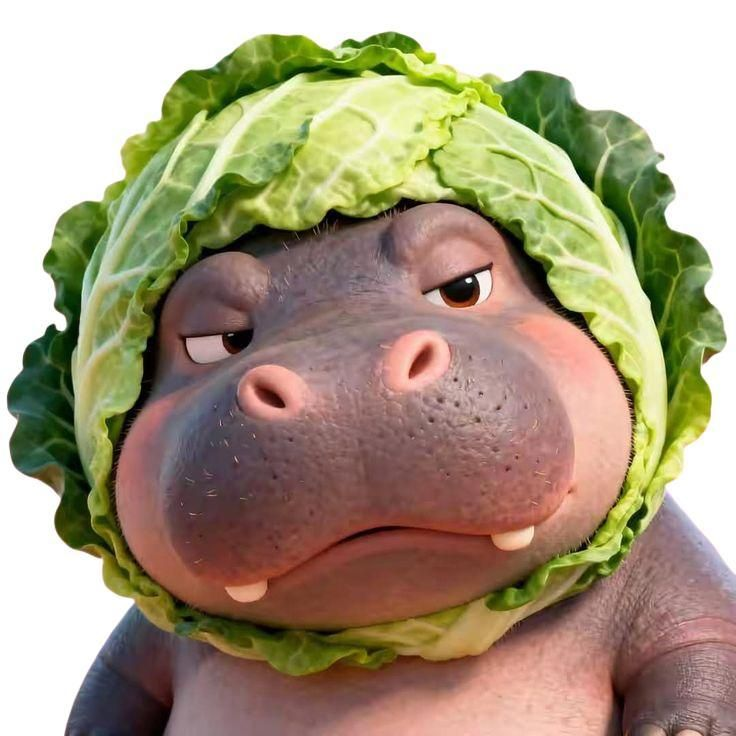

About

Tentang Pemilik
Nama Pemilik: Ir. Muhammad Amrin Lubis, M.Sc
Pendidikan: Magister Sains (M.Sc) bidang Teknologi Informasi
Pengalaman: 10+ tahun di bidang desain visual dan programming
Spesialisasi: Desain Visual, Web Development, Database Management
Visi & Misi
Visi: Menjadi perusahaan desain visual terdepan yang menghadirkan solusi kreatif dan inovatif.
Misi: Memberikan layanan desain visual berkualitas tinggi dengan memanfaatkan teknologi terkini dan kreativitas tanpa batas.